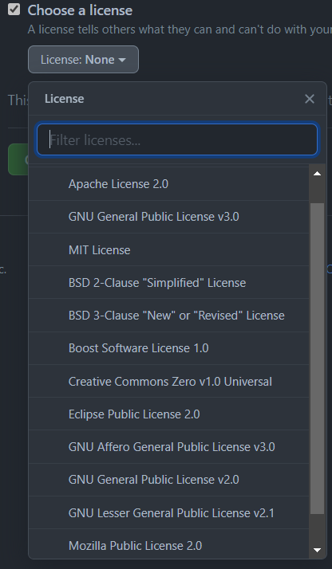

It's a provider of Internet hosting for software development and version control using Git.
Visit NowGithub helps users to publish github pages.(https://'username'.github.io/'repository name')
Github License is a legal instrument governing the use or redistribution of software.